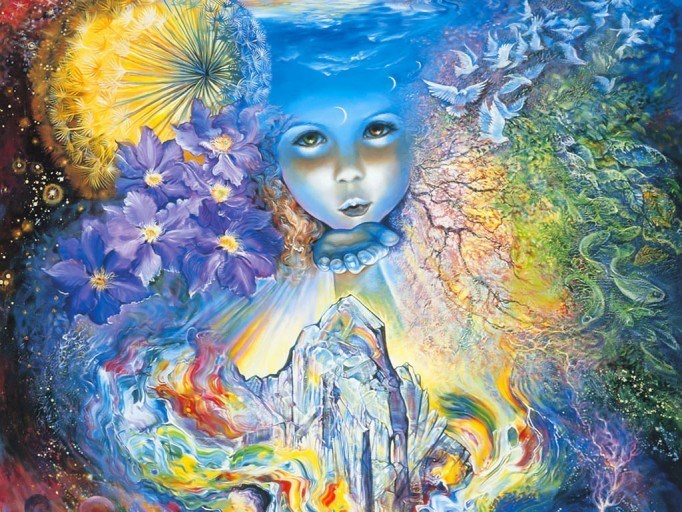
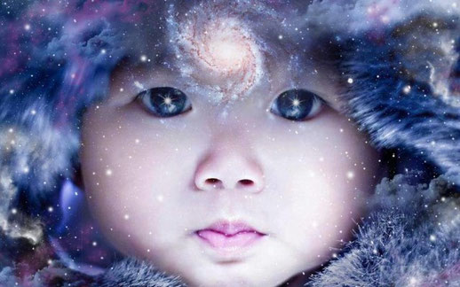

Hace ya varios años están apareciendo en la raza humana seres con mayores
capacidades intelectuales, con cierta rebeldía a los sistemas, a las
imposiciones y a la autoridad. Cercanos a grandes cambios planetarios la
cantidad de seres con estas características ha aumentado y se podría
considerar ya, que la totalidad de los niños que nacen tienen estas
características que encuadro como de los Niños del nuevo tiempo. Cabe
aclarar que también existen adultos con todas las características
mencionadas.
Una de las descripciones de estos niños los nombra como niños índigos.
¿Qué es un Niño Índigo?
Tomemos conciencia que estamos hablando de una raza de nuevos niños que son
maestros espirituales y de vida para la Tierra.

Un niño índigo es aquél que muestra una psicología diferente a la hasta
ahora conocida, con patrones de comportamiento tampoco muy usuales. Es
importante estar atentos a estos nuevos patrones de comportamiento para
lograr crear equilibrio en la mente de estas preciosas nuevas vidas.
Se dice que son niños que traen nuevos patrones psicológicos junto a
inusuales comportamientos. Estos niños vienen a romper estructuras y
sistemas que no contribuyen a la vida en armonía.
Hay varias clases de Niños Índigo, pero en la siguiente lista están dados
algunos de los patrones de comportamiento más comunes:
Estos niños vienen al mundo con un sentimiento de realeza. Si bien los
padres siempre tratamos a nuestros hijos como príncipes y princesas, aquí
se trata de reyes y ellos se comportan con todos los atributos de un rey o
reina.
Ellos tienen ...
dificultad en aceptar a una autoridad de manera absoluta sin
ninguna explicación. Necesitan entender que esa autoridad que se les impone
realmente viene de un ser con capacidades desarrolladas para ser más que
ellos. Ellos como se sienten reyes no harán ciertas cosas; por ejemplo:
esperar en una fila, ya que eso es muy difícil para ellos. Esperar su turno
también es difícil porque se consideran el principio y el fin. Pero no
estamos hablando de una cuestión de ego y que el limite tal como lo
conocemos va a cambiarlos sino comprender que ellos vienen con una
autoridad interna muy fuerte y están acostumbrados a ella y el reacomodarse
a vivir en este planeta tiene que ser acompañado de tolerancia y mucha
suavidad en la forma de tratarlos de los adultos.
Con frecuencia ellos encuentran mejores formas de hacer las cosas, tanto en
casa como en la escuela, lo que los hace parecer como rebeldes, inconformes
con cualquier sistema.
Son tan inteligentes que muchas veces a algunos se los trata como autistas
y realmente ellos no encuentran un incentivo para comunicarse con otros
seres, porque sienten que no tiene sentido y prefieren quedarse en su
propio mundo interior.
Parecen antisociales a menos que se encuentren entre niños de su misma
clase. Si no hay otros con un nivel de consciencia similar, a menudo se
tornan introvertidos, sintiendo que ningún ser humano los entiende. La
escuela a menudo es muy difícil para ellos desde el punto de vista social.
Es preciso que los padres encuentren caminos creativos y naturales para que
ellos canalicen esa gran cantidad de energía. No sirve aplacarlos con un
calmante para que sean “NORMALES COMO NOSOTROS”, o para sacarnos a los
niños de encima. Esta es una generación en donde los papás tienen que
ocuparse de contener a estos niños que serán nuestros maestros.
En el año 2006 en Buenos Aires se diagnosticaba al 60 % de los niños con el
rotulo SÍNDROME DE HIPERACTIVIDAD, lo cual es terrible. Si existe un porcentaje tan
alto, entonces no es enfermedad es un nuevo patrón genético que tenemos que
reconocer, aceptar y compatibilizar.
Estos niños se distraen fácilmente o tienen bajo poder de concentración.
Otra excusa de la ciencia SINDROME DE ADD, entonces a los niños que no
atienden la enseñanza, que a mi ver es caduca y a la de ellos también,
entonces este niño está enfermo. En la actualidad hasta los métodos como el
Antroposofico en la educación Waldorf ya está desactualizado para estos
nuevos niños. Pero no es cuestión de desesperar sino de ver que es lo que
necesitan y hacer nuevos sistemas educativos que los contengan desde su
nueva normalidad, aunque esto signifique la reeducación de los adultos.
Necesitan adultos emocionalmente estables y seguros a su alrededor. Esto es
sumamente importante, ya que muchas veces ellos pueden romper en llanto o
en gritos y golpes, y lo que está sucediendo es que están manifestando una
emoción de alguien de su entorno inmediato que la está reteniendo, entonces
el niño no solo la percibe, la toma y la explota. Se resisten a la
autoridad si ésta no está democráticamente orientada.
Prefieren otras formas de aprendizaje –para la lectura y las matemáticas en
particular. El juego y la diversión son el camino para el nuevo aprendizaje
porque en realidad no se trata de aprender sino de recordar y mantener
despiertas las capacidades que ellos traen naturalmente.
Aprenden a un nivel exploratorio, y se resisten a memorizar mecánicamente o
a ser un mero oyente.
Son muy compasivos y tienen muchos miedos, tales como la muerte y a la
pérdida de sus seres queridos. La muerte es algo que es preciso
desmitificar tanto en adultos como en niños, porque realmente no existe. Si
pudiéramos todos ver las almas, los planos en donde moran los seres que
dejaron su cuerpo físico, no tendríamos miedo a ese pasaje. Solo puedo
decirles que es tan hermoso que más de uno de nosotros quisiera estar en
esos lugares. Estos niños extrañan mucho la fuente divina de la que
salieron, y sienten la muerte como una pérdida que asocian a estar lejos de
esa fuente primigenia.

Algunos de los niños índigos son sumamente humani tas ya que están
destinados a trabajar con las masas. Serán los profesionales servidores de
las masas del mañana. Se los puede identificar porque son hiperactivos y
extremadamente sociables, hablan con todo el mundo, desde la igualdad y la
amistad. Les cuesta mucho acomodarse a su cuerpo físico por lo que
aparecerán como toscos en sus movimientos y no miden mucho la dimensión del
espacio, será común que se lleven cosas por delante. Son del tipo de
persona al que hay que recordarles las cosas permanentemente, porque a
menudo se olvidan de las órdenes simples y se distraen. Ellos aman la
lectura y cualquier encuentro con un libro hará que todo lo demás quede de
lado.
Encontramos otros niños Índigos que se interesan más en proyectos que en
personas. Ellos serán los ingenieros, arquitectos, diseñadores,
astronautas, pilotos del mañana. Son sumamente detallistas, obsesivos y muy
atléticos. Son controladores y la persona que más tratan de controlar es a
su madre si son niños, y a su padre si son niñas. Es importante
acompañarlos en el desarrollo de sus ideas y proyectos para que no se
frustren y busquen apoyos externos para encontrar satisfacción en sus
vidas.
¿Por qué se los llama índigos?
Los seres humanos somos multidimensionales y multicorporeos. Uno de
nuestros cuerpos es el áurico, el aura es una energía que rodea nuestro
cuerpo físico que tiene múltiples colores de acuerdo al estado mental,
emocional y a la misión de cada persona.
Los niños índigos son llamados así por el color que predomina en su aura,
también son llamados niños azules por ese color.
¿Cómo tratar a estos niños?
Respetarlos y agradecerles que estén compartiendo este tiempo en nuestra
familia. Permitir que elijan lo que desean comer, o cómo vestirse. No
despreciarlos por su edad o tamaño. Recordemos que son ellos nuestros
maestros. Explicar las decisiones para que encuentren donde están los
basamentos de la autoridad. No entenderán las cosas por que si.
Si esta temática es de su interés, se sugiere la lectura del libro “los
niños índigos” de Lee Caroll y Jan Tober.